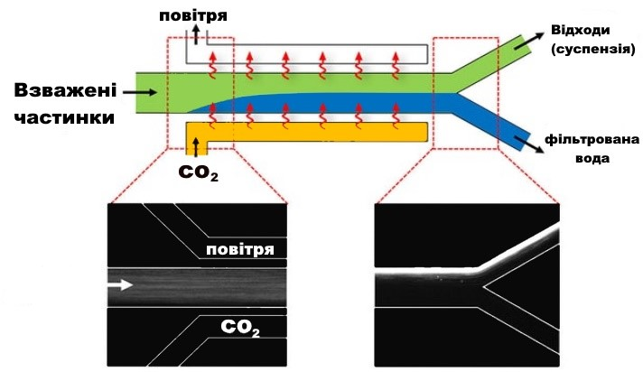

Автор Олексій Лаврищев, учень 9 класу ЗОШ № 25
Керівники Гончаров В.І., Гончарова М.І.
Наразі все більше зростає проблема отримання прісної води. Запаси водних ресурсів великі і поновлювані, однак масштаби їх споживання майже на два порядки перевершують витрати всіх інших видів викопної сировини разом узятих. При цьому запаси прісної води розподілені нерівномірно, і ряд регіонів Землі відчуває гостру нестачу водних ресурсів. Україну проблема з питною водою теж не оминула. Пошук чистої води є проблемним питанням для мешканців всіх міст, регіонів, та, навіть, сіл, бо стан питної води є показником не тільки якості життя, а й показником безпеки. У нашій країні дуже гостро стоїть проблема питної води, але ще гостріше ця проблема відчутна в її окремих регіонах, наприклад, на Донбасі. На території України протікають 23000 річок, а в Донбасі – всього 230. Якщо об’єм річного стоку, відношуваний на одну людину в середньому по Україні дорівнює 1800 м3, то по Донецькому економічному регіону – всього 639 м3. І при цьому тільки 10-15% водних ресурсів можуть бути використані для водопостачання. Також проблеми води загострилися з веденням бойових дій на Донбасі.
Об’єктом дослідження став новий метод очищення води СО2. Предмет дослідження - фізико-хімічний механізм процесу безфільтрового очищення води.
Метод очищення води вуглекислим газом був опублікований дослідниками Прінстонського університету у статті “Membraneless water filtration using CO2” в травні 2017 року в “Nature Communications”. Найбільш поширені способи очищення води засновані на механічних фільтрах або мембрані для видалення забруднюючих речовин. Але з часом вони засмічуються і потребують заміни. Нова технологія, розроблена дослідниками з Прінстонського університету, взагалі не вимагає фільтрів, натомість покладаючись на ін’єкцію CO2 для зміни хімічного складу води і окремих частинок відходів на основі їх електричного заряду. Система проста і недорога, що складається з силіконової гумової трубки, яка розділена на два канали на одному кінці. Оскільки силіконовий каучук проникний для CO2, газ під тиском здатний дифундувати через одну стінку труби і змішуватися з водою, що тече всередині. Ця взаємодія змінює хімію води, роблячи її трохи більш кислої і створює заряджені частинки або іони. Один з цих іонів є позитивно заряджений атом водню, який швидко переміщається через водний розчин, а інший представляє собою молекулу бікарбонату з негативним зарядом, який повільніше переміщається по воді. Рух цих молекул створює невелике електричне поле і, оскільки більшість частинок, зважених у воді, мають заряд, вони притягуються до однієї сторони потоку води, а відфільтрована вода, яка не заряджена, рухається в своєму власному каналі. Потім труба розділяється на дві частини: з фільтрованої водою, що протікає через одну, і відходи, що протікають через іншу.

Для підтримки електричного поля дослідники повинні були підтримувати рух іонів з водних каналах. Вони досягли цього, зробивши стінки каналу з матеріалу, який проникний для вуглекислого газу, в даному випадку силіконового каучуку (полідиметилсилоксана). Вуглекислий газ під тиском дифундує через одну стінку каналу і пронизує іншу сторону. Після закінчення розчиненого СО2 можна легко видалити, піддаючи воду впливу повітря, щоб вода містила тільки нормальні рівні вуглекислого газу.
Ми зробили експериментальну установку насичення води вуглекислим газом для з’ясування механізму хімічного градієнту, який викликає діффузіофорез.
Зміна складу морської води виявляли за допомогою вимірювання опору між зануреними у воду електродами в процесі пропускання СО2.
Було виявлено, що опір розчину між електродами зменшується з плином часу, що говорить про процес іонізації при пропущенні СО2. Що відповідає висновкам інженерів з Прінстонського університету. Розділити отриману іонізовану воду плануємо в подальшому при створенні повної власної установки.
Таким чином, ми з’ясували, що безфільтровий метод очищення води вуглекислим газом є перспективним для Донецької області.
Наша команда "RobotKram" вирішила працювати над темою:"Сільске господарство в космосі". Ми шукаємо відповіді на такі питання. Як на насіння впливає мікрогравітація? Які овочі будуть нешкідливі, якщо їх виростити в багатому важкими металами грунті Марса? Як облаштувати плантацію на борту космічного корабля? Вчені і космонавти вже понад п'ятдесят років шукають відповіді на ці питання. А ми до них приєдналися та створили свою модель городу.